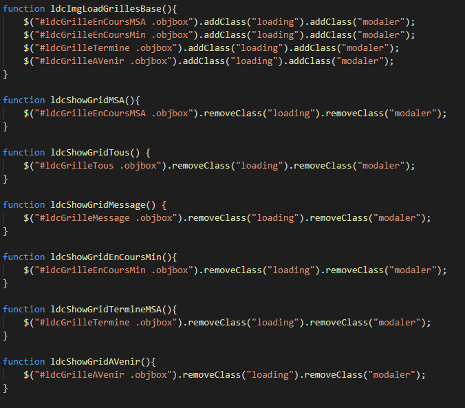

Mon stage chez Hydro-Québec
Durant le début de l'année 2019, pour ma session d'hiver au Collège Montmorency, j'ai effectué un stage chez Hydro-Québec en programmation web. Nous avions le mandat de développer différentes applications afin de faciliter les opérations courantes. Par exemple, nous avons développé une interface permettant de générer un horaire pour l'équipe de travail ainsi que de gérer les congés, le temps supplémentaire et les indisponibilités. Un autre exemple est le développement d'une interface permettant aux employés de soutien de consulter les tâches sur les serveurs en temps réel. Nous avons utilisé majoritairement les langages JavaScript et PHP. La librairie que nous avons le plus utilisé se nomme DHTMLX. Elle permet de générer des interfaces et des éléments graphiques extrêmement rapidement grâce à très peu de code JavaScript. Cependant, nous avons également touché énormément au HTML, CSS et jQuery, pour lequel j'ai développé un réel intérêt. Je tiens donc à vous le présenter.
Qu'est-ce que jQuery

Premièrement, jQuery est une librairie JavaScript open source qui a été créé en 2006 par John Resig. Le but de cette librairie est de venir complémenter le HTML et le CSS des pages internet. Il s'agit donc d’une des librairies les plus utilisées à ce jour. La plus grande utilité de jQuery est de rendre une page web plus interactive. Elle permet également de manipuler la page web, d'obtenir des données d’un serveur, de gérer les différents événements clients ainsi que de créer des effets et des animations sur des éléments. Avant de commencer, voici quelques exemples de ce que jQuery permet de faire:
Appuyez sur le texte pour le faire changer grâce à du jQuery
Cliquez ici pour rendre le tout en bleu.
Voici un exemple d'une requête ajax effectué avec jQuery.
Les avantages de jQuery
- jQuery est rapide et polyvalent
- La librairie jQuery est facile à apprendre, surtout si vous êtes familier et à l’aise avec le langage JavaScript puisqu’il s’agit du même style de programmation
- jQuery permet de faire davantage avec moins de code. La librairie vient simplifier des actions plus complexes.
- La documentions fournie est simple, efficace et facile à comprendre
- jQuery permet de rendre les sites plus dynamiques et plus intéressants pour les utilisateurs
Débuter avec jQuery
La première étape pour utiliser la librairie est de lier le script dans notre balise head. Vous pouvez autant
télécharger le fichier du site de jQuery que mettre son lien direct:
À noter, pour le mettre en lien comme ceci, il faut qu'il soit inclus dans le réseau de diffusion du contenu, ou le Content Delivery
Network, comme Google ou Microsoft. De plus, la librairie jQuery n'est pas support.e par tous les navigateurs web. En effet, plusieurs anciennes
versions de Firefox et d'Internet Explorer ne supportent pas cette librairie. Maintenant que jQuery est inclus dans nos scripts, nous
sommes prêts à l'utiliser!
La syntaxe et les sélecteurs
Il est important de comprendre que jQuery agit sur les éléments HTML de la page web. Il faut donc sélectionner les éléments à l'aide d'une requête ressemblant à $();, pour ensuite y performer une action. Ce symbole est simplifié et représente en fait jQuery(). Il est d'ailleurs important d'effectuer la commande (vous pouvez appuyer sur le code afin de mieux le voir):

Ce code permet de s'assurer que tout le document est bien chargé avant d'effectuer nos manipulations. On peut également écrire uniquement $(function(){}); pour vérifier que tout le document est chargé. On fait cela afin de ne pas avoir d'erreurs entre autres lorsque nous tentons de montrer ou cacher un élément qui n'est toujours pas chargé. On voit du même coup la base de la syntaxe utilisée. $( document ) correspond à l'élément, .ready() correspond à notre fonction. Donc on obtient toujours quelque chose semblable à $(notre sélecteur).notreAction(). On le voit bien dans les exemples plus hauts. Comme mentionné plus tôt, jQuery se base directement sur les éléments du HTML, donc les sélecteurs sont aussi majoritairement des éléments qu'on retrouve dans la page puisque ceux-ci se base sur les sélecteurs utilisés en CSS.
| Les sélecteurs | Exemple | Élément sélectionné |
|---|---|---|
| * | $("*") | Tous les éléments |
| #id | $("#idPrecis") | Élément ayant id="idPrecis" |
| .class | $(".classePrecise") | Tous les éléments avec la class="classePrecise" |
| .class,.class | $(".classe1,.classe2") | Tous les éléments avec les classes "classe1" or "classe2" |
| element | $("p") | Tous les éléments <p> |
| el1,el2,el3 | $("h1,div,p") | Tous les éléments <h1>, <div> and <p> |
| :first | $("p:first") | Le premier élément <p> |
| :last | $("p:last") | Le dernier élément <p> |
| :even | $("tr:even") | Tous les éléments <tr> even (1 sur 2) |
| :odd | $("tr:odd") | Tous les éléments <tr> odd (1 sur 2) |
| :first-child | $("p:first-child") | Tous les éléments <p> qui sont le premier enfant de leur parent |
| :first-of-type | $("p:first-of-type") | Tous les éléments <p> qui sont les premiers éléments <p> de leur parent |
| :last-child | $("p:last-child") | Tous les éléments <p> qui sont le dernier enfant de leur parent |
| :last-of-type | $("p:last-of-type") | Tous les éléments <p> qui sont le dernier <p> de leur parent |
| :nth-child(n) | $("p:nth-child(2)") | Tous les éléments <p> qui sont le 2e enfant de leur parent |
| :nth-last-child(n) | $("p:nth-last-child(2)") | Tous les éléments <p> qui sont le 2e enfant de leur parent, commençant par la fin |
| :nth-of-type(n) | $("p:nth-of-type(2)") | Tous les éléments <p> qui sont le 2e élément <p> de leur parent |
| :nth-last-of-type(n) | $("p:nth-last-of-type(2)") | Tous les éléments <p> qui sont le 2e élément <p> de leur parent, commançent par la fin |
| >:only-child | $("p:only-child") | Tous les éléments <p> qui sont le seul enfant de leur parent |
| :only-of-type | $("p:only-of-type") | Tous les éléments <p> qui sont le seul enfant de ce type de leur parent |
| parent > child | $("div > p") | Tous les éléments <p> qui sont un enfant direct d'un élément <div> |
| parent descendant | $("div p") | Tous les éléments <p> qui sont descendants d'un élément <div> |
| element + next | $("div + p") | L'élément <p> qui est directement après chaque éléments <div> |
| element ~ siblings | $("div ~ p") | Tous les éléments <p> qui sont siblings d'un élément <div> |
| :eq(index) | $("ul li:eq(3)") | Le quatrième élément d'une liste |
| :gt(no) | $("ul li:gt(3)") | Les éléments d'une liste dont l'index est plus grand que 3 |
| :lt(no) | $("ul li:lt(3)") | Les éléments d'une liste dont l'index est inférieur à 3 |
| :not(selector) | $("input:not(:empty)") | Tous les input qui ne sont pas vide |
| :header | $(":header") | Tous les éléments header <h1>, <h2> ... |
| :animated | $(":animated") | Tous les éléments animés |
| :focus | $(":focus") | Tous les éléments qui sont focus |
| :contains(text) | $(":contains('Bonjour')") | Tous les éléments qui contiennent le text "Bonjour" |
| :has(selector) | $("div:has(p)") | Tous les éléments <div> qui ont un élément <p> |
| :empty | $(":empty") | Tous les éléments qui ne sont pas vide |
| :parent | $(":parent") | Tous les éléments qui sont parent d'un autre élément |
| :hidden | $("p:hidden") | Tous les éléments <p> cachés |
| :visible | $("table:visible") | Tous les tables visibles |
| :root | $(":root") | L'élément root (racine) du document |
| :lang(language) | $("p:lang(de)") | Tous les éléments <p> avec un lang attribute commençant par "de" |
| [attribute]/td> | $("[href]") | Tous les éléments avec un attribut href |
| [attribute=value] | $("[href='default.htm']") | Tous les éléments avec une valeur égale à "default.htm" |
| [attribute!=value] | $("[href!='default.htm']") | Tous les éléments avec un href attribut différent de "default.htm" |
| [attribute$=value] | $("[href$='.jpg']") | Tous les éléments avec un href attribute finissant par ".jpg" |
| [attribute|=value] | $("[title|='Tomorrow']") | Tous les éléments avec un attribut tilte 'Tomorrow', ou commençant par 'Tomorrow' suivi d'un trait d'union |
| [attribute^=value] | $("[title^='Bon']") | Tous les éléments avec un attribut title commençant par "Bon" |
| [attribute~=value] | $("[title~='bonjour']") | Tous les éléments ayant comme attribut title contenant le mot spécifique "bonjour" |
| [attribute*=value] | $("[title*='bonjour']") | Tous les éléments ayant comme attribut title attribute contenant le mot "bonjour" |
| :input | $(":input") | Tous les éléments input |
| :text | $(":text") | Tous les éléments input avec type="text" |
| :password | $(":password") | Tous les éléments input avec type="password" |
| :radio | $(":radio") | Tous les éléments input avec type="radio" |
| :checkbox | $(":checkbox") | Tous les éléments input avec type="checkbox" |
| :submit | $(":submit") | Tous les éléments input avec type="submit" |
| :reset | $(":reset") | Tous les éléments input avec type="reset" |
| :button | $(":button") | Tous les éléments input avec type="button" |
| :image | $(":image") | Tous les éléments input avec type="image" |
| :file | $(":file") | Tous les éléments input avec type="file" |
| :enabled | $(":enabled") | Tous les éléments input |
| :disabled | $(":disabled") | Tous les éléments input désactivés |
| :selected | $(":selected") | Tous les éléments input sélectionnés |
| :checked | $(":checked") | Tous les éléments cochés |
Les sélecteurs permettent donc de trouver ou de sélectionner un élément selon différents critères tels que leur id, leurs classes, leurs attributs ainsi que les valeurs de ceux-ci. Comme vu dans le tableau, un appel $('h1') sélectionnera tous les éléments h1, $(‘.uneClasse’) sélectionnera les éléments ayant comme classe uneClasse ou encore $(‘#monID’) sélectionnera l’élément ayant comme id ‘monID’. Après avoir sélectionné un élément, on peut ensuite le sauvegarder dans une variable grâce aux variables non typées de JavaScript:
Par exemple, dans l'action jQuery utilisée ici, notre élément appuyé correspond au texte souligné en bleu puisque son id (#id) est définis. Puis, on performe notre action sur un deuxième élément de la page web.
On retrouve donc les éléments dans notre JavaScript selon leur id dans ce cas, mais comme mentionné plus tôt, on peut utiliser des classes et bien
d'autres sélecteurs. On peut également utiliser le sélecteur $(this) puisque JavaScript et jQuery sont heureusement orienté objet. De plus,
le concept de parent, de frère et d'enfant est très important en jQuery. Lorsque nous appelons un élément HTML, tous ses éléments intérieurs
seront considérés comme ses enfants. Les éléments de même niveau quant à eux, seront ses frères, tandis que les éléments qui l'englobent seront
ses parents. Voici un exemple concret. Portez attention aux id afin de bien comprendre
chacun des membres de cette famille.
Les méthodes de jQuery
Les manipulations DOM

Comme vous le savez déjà et avez pu le remarquer plus haut, les éléments DOM sont des éléments objets de notre page HTML représentés par une balise précise tel que <p>, <div>, <a>, <table>, etc. que nous pouvons sélectionner par l'entremise de la librairie jQuery. Les méthodes de manipulations DOM de la librairie permettent de mettre à jour la page HTML selon l'élément sélectionné. Par exemple, la méthode remove() vient retirer l'élément spécifié dans notre sélecteur au complet alors que la méthode after() vient ajouter un élément après le sélecteur. Ces méthodes viennent donc démontrer l'utilité de jQuery quant à la modification directe du contenu de la page.
remove()
Ceci est un premier texte
Ceci est un deuxième texte
Ceci est un troisième texte
after()
Ceci est un premier texte
| Méthode | Description |
|---|---|
| append() | Ajoute le contenu a la fin de l'élément spécifié par le sélecteur. |
| before() | Ajoute le contenu avant l'élément spécifié par le sélecteur. |
| after() | Ajoute le contenu après l'élément spécifié par le sélecteur. |
| prepend() | Ajoute le contenu au début d'un élément spécifié par le sélecteur. |
| remove() | Enlève un élément spécifié par un sélecteur. |
| replaceAll() | Remplace tous les occurrences d'un élément par un autre élément, |
| wrap() | Entour la structure HTML autour de chaque élément spécifié par le sélecteur |
Comme on peut le voir, ces fonctions se basent grandement sur le sélecteur pour positionner les nouveaux éléments. Ces nouveaux éléments seront définis directement dans le code JavaScript plutôt que dans le squelette HTML de la page. Elles permettent d'ailleurs de ne pas créer inutilement des éléments, mais de les ajouter uniquement lors de l'événement souhaité.
Les méthodes de parcours (Traversing methods)
Ces méthodes permettent majoritairement d'obtenir un élément en lien avec le sélecteur indiqué. Le principe de famille de jQuery devient donc extrêmement important afin de bien utiliser les méthodes de parcours. Par exemple, on pourrait obtenir les enfants d'un élément grâce à la méthode children(). Comme mentionné plus tôt, nous avons donc notre élément sélectionné et toute sa famille qui deviennent accessibles grâce à ces méthodes. Donc, ses parents, ses enfants, ses frères, ses ancêtres et ses descendants sont maintenant à notre portée.
| Méthode | Description |
|---|---|
| children() | Obtient tous les enfants de l'élément sélectionné. |
| each() | Boucle entre tous les éléments. |
| find() | Trouve tous les enfants de chaque élément spécifié. |
| first() | Obtient la première occurrence de l'objet spécifié. |
| next() | Obtient le prochain frère immédiat de l'élément |
| parent() | Obtient tous les parents de l'élément. |
| prev() | Obtient son frère immédiat précédant. |
| siblings() | Obtient tous les frères de l'élément sélectionné. |
Une des méthodes très intéressantes est la méthode each(). Puisqu'elle itère à travers les éléments, elle peut être combinée avec les autres méthodes afin d'appliquer une fonction sur chacun des éléments. Par exemple:
Les méthodes CSS

Comme mentionné plus tôt, les sélecteurs jQuery sont fortement basés sur ceux de CSS, donc il est logique que cette libraire nous permette de mettre à jour le CSS. En effet, les méthodes CSS permettent de modifier les classes d'un élément, ou directement de lui ajouter des styles. On peut aussi, entre autres, activer ou désactiver les classes d'un élément.
| Méthode | Description |
|---|---|
| css() | Obtient ou met une propriété de style à l'élément sélectionné. |
| addClass() | Ajoute une ou plusieurs classes déjà créée à l'élément. |
| hasClass() | Détermine si un des élément sélectionnés a comme class CSS celle donnée en paramètre. |
| removeClass() | Retire une ou plusieurs classes des éléments spécifiés. |
| toggleClass() | Active ou désactive une ou des classes d'un élément. |
Les méthodes d'attributs
Grâce aux propriétés de CSS, on peut donner des attributs aux différents éléments DOM de notre page web. Les méthodes d'attributs permettent donc de modifier les propriétés d'un élément, donc ses attributs, son texte, ou directement son contenu HTML. Elles peuvent aussi compléter les méthodes de CSS en ajoutant par exemple une classe de style à un élément. On peut voir un exemple plus haut dans la page dans la première section de l'accordéon.
| Méthode | Description |
|---|---|
| attr() | Obtient ou met la valeur de l'attribut spécifié de l'élément. |
| prop() | Obtient ou met la valeur de la propriété spécifié de l'élément. |
| html() | Obtient ou met le contenu HTML de l'élément spécifié. |
| text() | Obtient ou met le texte à jour de l'élément spécifié. |
| val() | Obtient ou met une valeur d'une des propriétés de l'élément spécifié. |
Les événements
Tout d'abord, qu'est-ce qu'un événement? C'est le concept de lancer une fonction, un bout de code, lorsqu'une action précise est faite par l'utilisateur, par le navigateur ou par le document. Donc, on peut dire qu'il s'agit du lien entre une action quelconque et d'une portion de code en écoutant continuellement le code. Aussi, la majorité des événements correspondent à un événement DOM. Par exemple, comme mentionné plus tôt, l'action la plus importante est $(document).ready(function(){});. Cet événement est un exemple d'action du document, et non de l'utilisateur. Pour ce qui est des événements faits par l'utilisateur, nous avons trois types: Événements d'un formulaire, événements du clavier et événements de la souris. Voici la liste de tous les événements possibles:
| Méthode jQuery | Événement DOM | Description |
|---|---|---|
| blur | onblur | Lorsque notre élément perd le focus. |
| change | onchange | Lorsque la valeur de notre élément change de valeur. |
| focus | onfocus | Lorsque notre élément obtient le focus. |
| focusin | onfucusin | Tout juste avant que notre élément obtienne le focus. |
| select | onselect | Lorsque du texte a été sélectionné dans notre élément. |
| submit | onsubmit | Lorsqu'un formulaire est soumis. |
| Méthode jQuery | Événement DOM | Description |
|---|---|---|
| keydown | onkeydown | Lorsqu'un utilisateur est en train d'appuyer sur une touche du clavier. |
| keypress | onkeypress | Lorsqu'un utilisateur appuie sur une touche du clavier. |
| keyup | onkeyup | Lorsqu'un utilisateur relâche une touche du clavier. |
| focusout | Lorsque le focus est perdu. |
| Méthode jQuery | Événement DOM | Description |
|---|---|---|
| click | onclick | Lorsque l'utilisateur click sur l'élément. |
| dblclick | ondblclick | Lorsque l'utilisateur fait un click double sur l'élément. |
| focusout | Lorsque le focus est perdu. | |
| hover | Lorsque l'utilisateur met son onglet sur l'élément. | |
| mousedown | onmousedown | Lorsque l'utilisateur appuie sur sa souris sur un élément. |
| mouseenter | onmouseenter | Lorsque l'onglet entre dans l'élément. |
| mouseleave | onmouseleave | Lorsque l'onglet sort de l'élément. |
| mousemove | onmousemove | Lorsque l'onglet bouge à l'intérieur de l'élément. |
| mouseout | onmouseout | Lorsque l'onglet sort de l'élément ou d'un de ses enfants. |
| mouseover | onmouseover | Lorsque l'onglet entre sur un élément ou un de ses enfants. |
| mouseup | onmouseup | Lorsque l'usager relâche le bouton de la souris. |
| Toggle | Sensiblement le même que le click. |
| Méthode jQuery | Événement DOM | Description |
|---|---|---|
| Load | onload | Lorsque le document est chargé. |
| Ready | Lorsque le document est prêt. | |
| Unload | onunload | Lorsque le document est déchargé. |
Ces méthodes sont extrêmement utilisées de nos jours puisqu'elles permettent d'offrir à l'utilisateur différentes interactions que vous avez pu, vous aussi, utiliser à travers la lecture de ce document. De plus, chacune des méthodes d'événement possède un callback afin de pouvoir exécuter du code lors du déclenchement du même événement. Une autre fonction qui ne se trouve pas dans le tableau et qui est probablement une des plus utilisées est la fonction on(). Elle permet de regrouper différents événements ensemble et de leur donner la même fonction. Elle agit donc un peu comme un listener de différentes fonctions simultanément. Par exemple, appuyez ou sortez votre souris de la boîte ci-dessous afin de modifier la couleur de celle-ci.
On voit plusieurs concepts déjà expliqués grâce à cet exemple. On peut voir l'utilisation de la méthode on() qui nous permet de relié deux événements à la même fonction, le callback de tous les événements de jQuery afin de créer notre fonction, l'utilisation du $(this) à l'intérieur de la fonction afin de sélectionner l'élément en cours et la modification temporaire du CSS de l'élément sélectionné grâce à la méthode css(). La fonction on() est contrebalancée par la fonction off() qui vient, quant à elle, retirer les listener d'un élément.
Les animations
Les méthodes d'animations sont utilisées afin de mettre des effets spéciaux sur des éléments DOM. Elles permettent de rendre le site plus dynamique et plus agréable à consulter par des utilisateurs en offrant des animations moins brusques. La méthode la plus utilisée est définitivement $(#monID).animate() qui prends comme paramètre un objet JSON définissant les styles CSS à appliquer, le temps d'exécution pour compléter l'animation, le "easing" (la façon dont l'animation progresse) et le callback. Par exemple, appuyez sur le texte afin de l'animer et de changer sa dimension.
Les manipulations de dimensions
Les méthodes de manipulations de dimensions permettent d'obtenir ou de modifier la forme d'un élément sans directement changer son code HTML ou CSS. Par exemple, on peut facilement obtenir la hauteur et la largeur d'un élément grâce aux fonctions height() et width().
| Méthode | Description |
|---|---|
| height() | Obtient ou met à jour la hauteur de l'élément. |
| innerHeight() | Obtient ou met à jour la hauteur intérieur de l'élément (sa hauteur + son padding). |
| outerHeight() | Obtient ou met à jour la hauteur extérieur de l'élément (sa bordure + son padding + sa hauteur). |
| offset() | Obtient ou met à jour les coordonnées à partir de la gauche et du haut de l'élément. |
| position() | Obtient les coordonnées de l'élément. |
| width() | Obtient ou met à jour la largeur de l'élément. |
| innerWidth() | Obtient ou met à jour la largeur intérieur de l'élément (son padding + sa largeur). |
| outerWidth() | Obtient ou met à jour la largeur extérieur de l'élément (sa bordure, son padding et sa largeur). |
Les requêtes Ajax
Les requêtes Ajax permettent de communiquer de manière asynchrone avec un serveur afin de, généralement, obtenir de l'information ou de lui en envoyer. Contrairement aux autres actions, il n'y a pas nécessairement de sélecteur lors de ces actions. En effet, la formule ressemble davantage à $.ajax();. On retrouve un exemple dans la troisième section de l'accordéon du début. Une requête Ajax peut prendre énormément de paramètres, mais les plus communs sont:
| Paramètre | Description |
|---|---|
| url | Donne le lien URL vers lequel la requête sera envoyée. |
| method | La méthode HTTP qui sera utilisée pour effectuer la requête. |
| dataType | Le type de donnée que nous nous attendons de recevoir (xml, json, script ou html). |
| data | Les données qui seront envoyées selon la méthode indiquée. |
Après avoir mis en place notre requête, on peut définir les actions qui seront portées selon ce qui est retourné par le serveur. Habituellement, nous allons vouloir avoir du code lorsque la requête est terminée, lorsqu'elle échoue et en tout temps afin d'être au courant si celle-ci n'a pu être accompli ou bien si elle a réussi. Par exemple:
Utilisation durant mon stage
Au cours de mon stage, j'ai eu la chance de perfectionner et d'apprendre en profondeur tout ce que jQuery avait à offrir. Nous n'étions pas obligés de l'utiliser, mais j'ai fait le choix de m'accorder du temps pour l'apprendre afin de simplifier différentes tâches que nous devions accomplir. Cependant, nous devions absolument maîtriser les requêtes Ajax puisque c'était le moyen de communication avec le serveur qu'Hydro-Québec avait choisi. Donc, à travers nos différentes applications, nous avions vraiment beaucoup de ces requêtes avec lesquelles je n'étais vraiment pas à l'aise au départ. Par exemple, pour l'application Horaire De Travail (HDT), nous devions charger une liste de tous les horaires déjà créés puis les ajouter à notre page. Dans l'exemple suivant, nous effectuons une requête Ajax de type GET, et non POST, et les données retournées seront en HTML. Vous pouvez consulter un autre exemple de requête ajax utilisée dans mon stage dans les exemples qui suiveront.
On voit bien la requête effectuée au module HDT, au contrôleur administration et à la méthode actionChargerListeHoraires qui reçoit en paramètre l'équipe dont nous cherchons les horaires. Lorsque la requête est terminée, on reçoit dans le format souhaité (HTML) la liste des employés, que nous attachons ensuite à notre variable JavaScript. Si la requête échoue, on affiche un message grâce à une autre libraire.
Pour les méthodes qui m'ont grandement aidées durant mon stage, la méthode data() nous a permise de trouver l'information que nous cherchions rapidement dans l'horaire. En envoyant en paramètre l'attribut que nous voulions, nous pouvions obtenir rapidement les données sans devoirs faire de requête au serveur. Encore dans l'Horaire De Travail, en créant les balises div qui allait représenter chaque jour, nous mettions le numéro de l'horaire et le libellé de la plage courante que nous pouvions ensuite aller rechercher grâce à jQuery ainsi:
Grâce à ces deux petites lignes de codes, nous avions dans des variables JavaScript toute l'information nécessaire sans devoirs faire de requêtes, rendant notre application beaucoup moins lourde autant pour le serveur que pour le client. On voit que nous envoyons en paramètre à la méthode les attributs qui nous intéresse. Si nous avions voulu attribué une valeur à l'attribut plutôt que de l'obtenir, nous aurions dû inverser l'égalité.
Pour ce qui est des autres méthodes qui m'ont servi, bien sûr que les méthodes d'événements m'ont aidé. La fonction click() est venue ajouter de l'interaction à mes applications, rendant le tout plus intuitif et plus communicateur pour mon client. Par exemple, dans mon second projet Liste De Changement (LDC), nous avions un bouton qui permettait de mettre à jour la page au complet. Afin d'indiquer au client que la page chargeait, nous avions une fonction suite à son click.
Dans cet exemple, la méthode click() reçoit en paramètre la fonction que nous désirons utiliser lors de l'appuie du bouton par l'usager. On voit également des méthodes CSS permettant de modifier les classes de notre élément. Ces méthodes seront présentées dans l'exemple suivant.
Comme on le voit dans l'exemple précédent, les méthodes CSS ont grandement servi aussi. Autant dans HDT que dans LDC, nous modifions continuellement les classes attribuées aux éléments, ou directement leurs styles. Dans Horaire De Travail, nous l'utilisions entre autres lorsque la cellule de la journée changeait, par exemple si l'on ajoutait un congé sur la cellule et qu'elle devait maintenant être d'une nouvelle couleur, au lieu de tout recharger l'horaire, on ajoutait une classe temporairement pour rendre la cellule de la bonne couleur. Dans Liste De Changement, on l'utilisait pour mettre une image de chargement sur les grilles. Ces classes ajoutaient un gif de chargement et diminuaientt l'opacité de la grille.
On voit en même temps que, comme mentionné plus tôt, on peut enchaîner les actions. J'aurais pu également enlever les deux classes d'un seul coup. Ces méthodes viennent donc agir du côté du client et nous on permit de rendre l'application plus parlante. On peut également observer que ces méthodes prennent en paramètre les classes que nous désirons ajouter à l'élément.
De plus, nous avons aussi utilisé les méthodes mouseover() et mouseout() afin de créer nos tooltips et nos popups de façon autonome. En effet, lorsque nous passions notre souris sur un des éléments DOM, nous affichions notre fenêtre, et en sortant nous la cachions. Notre fonction pour afficher le popup était donc enclenchée lorsque la souris passait sur l'élément, et la fonction pour la cacher était déclenchée lorsque la souris sortait.
On voit encore une fois qu'on peut enchaîner les actions les unes après les autres et qu'on n'est pas obligé d'utiliser l'élément DOM sélectionné. On voit également que cette méthode retourne un paramètre qui contient les données de l'événements, même si dans notre cas, il n'est pas utilisé.
Aussi, dans HDT, nous avions souvent besoin de modifier la cellule comme vous avez pu le comprendre. Il y avait des cas dans lequel non seulement la couleur changeait comme vu plus tôt, mais aussi le texte changeait. Dans ces cas, les méthodes de manipulations DOM nous étaient vraiment utiles. Par exemple, nous devions changer le libellé de la case en fonction du nombre d'heures de vacance accordé. Un nombre d'heures de vacance égal au nombre d'heures travaillé remplaçait complètement le texte alors qu'un congé partiel devait afficher le libellé de base avec '*'.
Les différents sélecteurs nous ont donc grandement aidés comme vous pouvez le constater. Dans notre cas, on allait chercher l'enfant de notre cellule qui contenait lui le texte que nous désirions changer. Pour modifier la cellule, nous devions lui passer en paramètre le nouveau contenu. Si nous avions voulu obtenir la valeur courante du texte par exemple, il aurait fallu appeler uniquement .text(), et non envoyer un paramètre en plus.
Ensuite, dans LDI, nous avons utilisé une des méthodes essentiels à jQuery: each(). Elle nous permettait de naviguer entre tous les éléments sélectionnés. La fonction retourne en paramètre l'index de l'élément et l'élément lui-même. Cette méthode de parcours nous permettait d'éviter le surplus de code ou de créer un id différent pour chacun de nos éléments. Nous avons également utilisé la méthode prop() qui, dans notre cas présent, reçoit en paramètre la propriété que nous cherchons. De plus, nous effectuons une requête Ajax de type POST cette fois-ci, et non GET. On le remarque grâce à l'attribut data qui est défini ainsi que grâce à l'attribut method qui est POST. On reçoit en retour des données sous format JSON.
Dans cette exemple, on allait chercher chaque élément qui avait comme classe unCheckbox qui servait a défénir nos cases à cocher. Grâce à notre méthode each(), nous iterions entre tous nos cases afin de former un objet. Grâce à la méthode prop() à laquelle nous passons la propriété checked, nous pouvons déterminer si notre élément courant, une des nombreuses cases à cocher, est cochée. Cette exemple démontre aussi qu'il est simple et efficace d'utiliser plusieurs méthodes jQuery dans une même méthode puisqu'ici, nous utilisons une méthode de parcours, une méthode d'attribut et une requête Ajax.
Mes projets

L'horaire de travail
J'ai travaillé sur ce projet pour environ 10 semaines. L'application gère les horaires, les congés, le temps supplémentaire et bien d'autres options. Vous pouvez appuyer sur les images afin de les agrandir.

Liste des Changements
Ce projet a été beaucoup plus court. J'ai travaillé sur ce projet pour environ 3 semaines. Il permet aux employés de soutien de consulter tous les changements sur les bases de données ou le matériel. Vous pouvez appuyer sur les images afin de les agrandir.
Liste des Incidents
Ce projet a également été très court et n'a duré que 2 semaines. Il permet, un peu comme LDC, de consulter une grille contenant tous les incidents du département TransÉnergie. Vous pouvez appuyer sur les images afin de les agrandir.


Conclusion
En conclusion, la libraire jQuery est un outil très puissant qui vient simplifier notre structure HTML et qui concorde extrêmement bien avec JavaScript. Bien qu'il ne nous était pas nécessaire d'utiliser et d'apprendre cette libraire, j'ai beaucoup appris et eu de plaisir à évoluer avec celle-ci et apprendre et découvrir ses nombreuses fonctions. Cette libraire m'a continuellement été utile au travers de mes deux projets. Je tiens aussi à remercier Gabriel Blais, Patrick Deschênes, Guillaume Dépelteau, Éric Mainville, les autres stagiaires, l'équipe de CO ainsi que tous les membres d'Hydro-Québec qui ont pris le temps de nous accueillir, mais aussi de s'intéresser à nos différents projets. J'ai grandi et appris comme je ne croyais jamais et ma passion pour la programmation est définitivement présente. Merci aussi à mon superviseur de stage Louis Bouchard qui a été en contact tout au long du projet immense qu'est le stage.